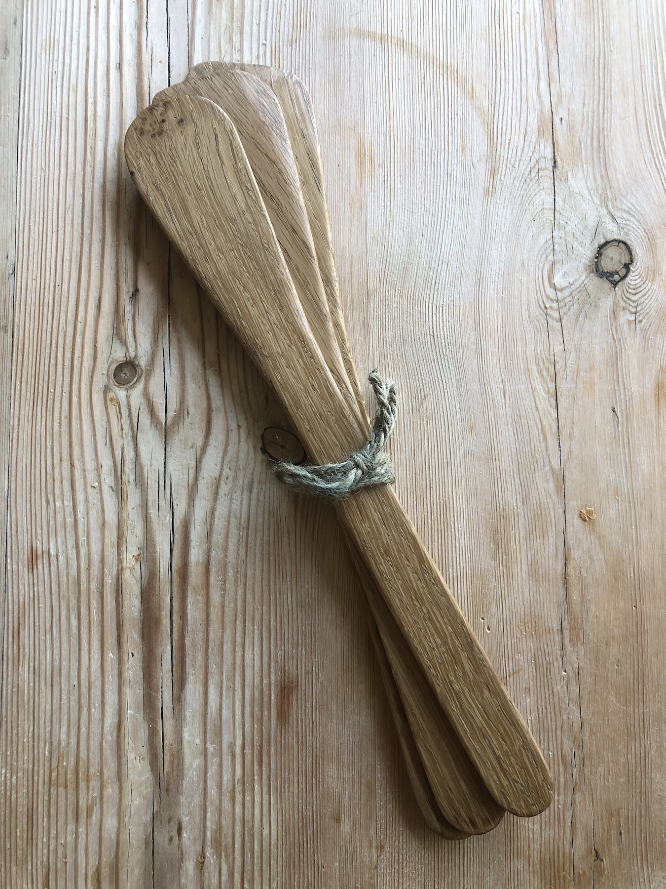
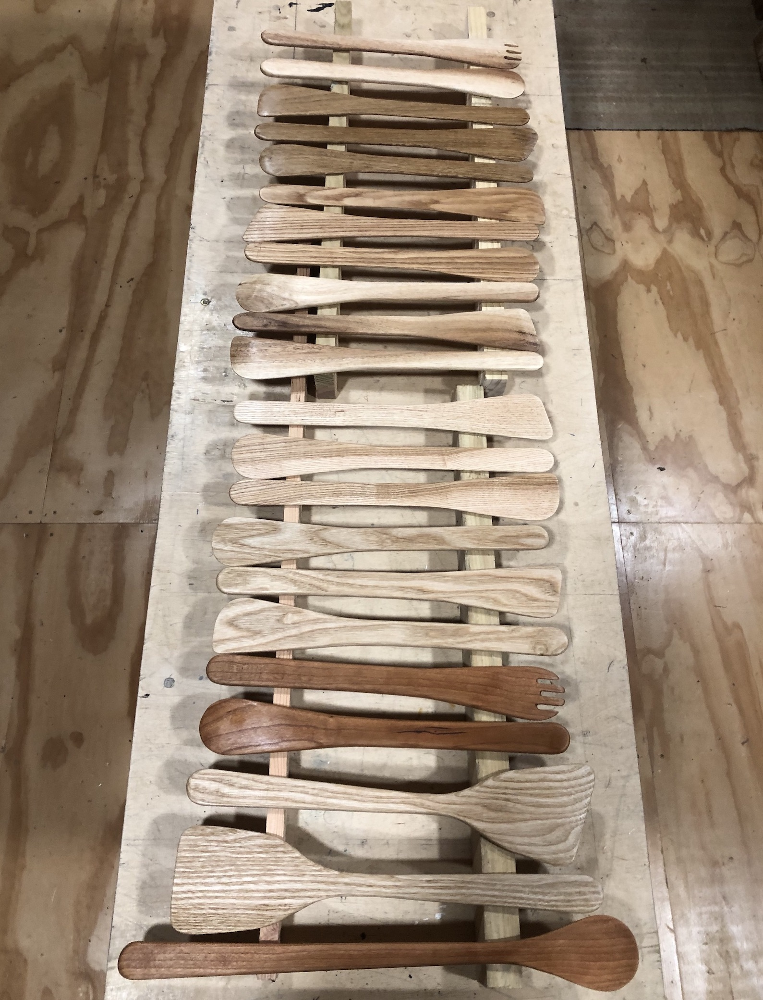

Spoons and spatulas
Experimenting with different woods

Spoons and spatulas manufactured from a range of wood species including Oak, Ash, Cherry and South African Yellow Wood. Some will of course work better than others. I await feedback from my friends and relations who received them for Christmas last year.

